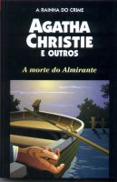

A Morte do Almirante
The Floating Admiral
Uma das obras mais importantes do gênero policial. A Morte do Almirante foi escrita por treze dos maiores autores de livros de mistério e de suspense, todos membros do Detection Club. Escrito por partes, cada escritor se encarregou de um capítulo, passando-o ao colaborador seguinte, que deveria resolver o mistério apresentado e criar outros. Agatha Christie contribuiu de modo brilhante para o sucesso dessa obra.